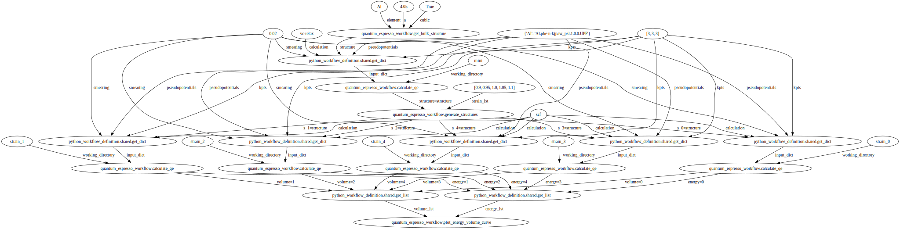
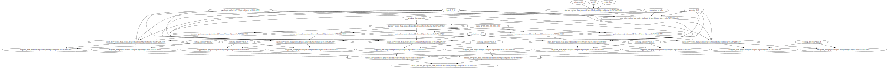

Load Quantum Espresso Energy Volume Curve Workflow#
Plot#
from python_workflow_definition.plot import plot
plot(file_name='workflow_qe.json')

Aiida#
from python_workflow_definition.aiida import load_workflow_json
from aiida import load_profile
load_profile()
Profile<uuid='50df29b0900f471297be222e5828da88' name='pwd'>
wg = load_workflow_json(file_name='workflow_qe.json')
wg
wg.run()
04/12/2025 04:10:39 PM <1152> aiida.orm.nodes.process.workflow.workchain.WorkChainNode: [REPORT] [202|WorkGraphEngine|continue_workgraph]: tasks ready to run: get_bulk_structure1
04/12/2025 04:10:40 PM <1152> aiida.orm.nodes.process.workflow.workchain.WorkChainNode: [REPORT] [202|WorkGraphEngine|update_task_state]: Task: get_bulk_structure1, type: PyFunction, finished.
04/12/2025 04:10:40 PM <1152> aiida.orm.nodes.process.workflow.workchain.WorkChainNode: [REPORT] [202|WorkGraphEngine|continue_workgraph]: tasks ready to run: get_dict10
04/12/2025 04:10:40 PM <1152> aiida.orm.nodes.process.workflow.workchain.WorkChainNode: [REPORT] [202|WorkGraphEngine|update_task_state]: Task: get_dict10, type: PyFunction, finished.
04/12/2025 04:10:40 PM <1152> aiida.orm.nodes.process.workflow.workchain.WorkChainNode: [REPORT] [202|WorkGraphEngine|continue_workgraph]: tasks ready to run: calculate_qe2
[jupyter-pyiron-dev-pyth-flow-definition-17n30fhy:01227] mca_base_component_repository_open: unable to open mca_btl_openib: librdmacm.so.1: cannot open shared object file: No such file or directory (ignored)
Note: The following floating-point exceptions are signalling: IEEE_INVALID_FLAG
04/12/2025 04:11:35 PM <1152> aiida.orm.nodes.process.calculation.calcfunction.CalcFunctionNode: [WARNING] Found extra results that are not included in the output: dict_keys(['energy', 'volume'])
04/12/2025 04:11:35 PM <1152> aiida.orm.nodes.process.workflow.workchain.WorkChainNode: [REPORT] [202|WorkGraphEngine|update_task_state]: Task: calculate_qe2, type: PyFunction, finished.
04/12/2025 04:11:36 PM <1152> aiida.orm.nodes.process.workflow.workchain.WorkChainNode: [REPORT] [202|WorkGraphEngine|continue_workgraph]: tasks ready to run: generate_structures3
04/12/2025 04:11:37 PM <1152> aiida.orm.nodes.process.workflow.workchain.WorkChainNode: [REPORT] [202|WorkGraphEngine|update_task_state]: Task: generate_structures3, type: PyFunction, finished.
04/12/2025 04:11:37 PM <1152> aiida.orm.nodes.process.workflow.workchain.WorkChainNode: [REPORT] [202|WorkGraphEngine|continue_workgraph]: tasks ready to run: get_dict11,get_dict12,get_dict13,get_dict14,get_dict15
04/12/2025 04:11:38 PM <1152> aiida.orm.nodes.process.workflow.workchain.WorkChainNode: [REPORT] [202|WorkGraphEngine|update_task_state]: Task: get_dict11, type: PyFunction, finished.
04/12/2025 04:11:38 PM <1152> aiida.orm.nodes.process.workflow.workchain.WorkChainNode: [REPORT] [202|WorkGraphEngine|continue_workgraph]: tasks ready to run: calculate_qe4,get_dict12,get_dict13,get_dict14,get_dict15
[jupyter-pyiron-dev-pyth-flow-definition-17n30fhy:01247] mca_base_component_repository_open: unable to open mca_btl_openib: librdmacm.so.1: cannot open shared object file: No such file or directory (ignored)
Note: The following floating-point exceptions are signalling: IEEE_INVALID_FLAG
04/12/2025 04:11:51 PM <1152> aiida.orm.nodes.process.calculation.calcfunction.CalcFunctionNode: [WARNING] Found extra results that are not included in the output: dict_keys(['structure'])
04/12/2025 04:11:51 PM <1152> aiida.orm.nodes.process.workflow.workchain.WorkChainNode: [REPORT] [202|WorkGraphEngine|update_task_state]: Task: calculate_qe4, type: PyFunction, finished.
04/12/2025 04:11:51 PM <1152> aiida.orm.nodes.process.workflow.workchain.WorkChainNode: [REPORT] [202|WorkGraphEngine|continue_workgraph]: tasks ready to run: get_dict12,get_dict13,get_dict14,get_dict15
04/12/2025 04:11:52 PM <1152> aiida.orm.nodes.process.workflow.workchain.WorkChainNode: [REPORT] [202|WorkGraphEngine|update_task_state]: Task: get_dict12, type: PyFunction, finished.
04/12/2025 04:11:52 PM <1152> aiida.orm.nodes.process.workflow.workchain.WorkChainNode: [REPORT] [202|WorkGraphEngine|continue_workgraph]: tasks ready to run: calculate_qe5,get_dict13,get_dict14,get_dict15
[jupyter-pyiron-dev-pyth-flow-definition-17n30fhy:01259] mca_base_component_repository_open: unable to open mca_btl_openib: librdmacm.so.1: cannot open shared object file: No such file or directory (ignored)
Note: The following floating-point exceptions are signalling: IEEE_INVALID_FLAG
04/12/2025 04:12:05 PM <1152> aiida.orm.nodes.process.calculation.calcfunction.CalcFunctionNode: [WARNING] Found extra results that are not included in the output: dict_keys(['structure'])
04/12/2025 04:12:05 PM <1152> aiida.orm.nodes.process.workflow.workchain.WorkChainNode: [REPORT] [202|WorkGraphEngine|update_task_state]: Task: calculate_qe5, type: PyFunction, finished.
04/12/2025 04:12:05 PM <1152> aiida.orm.nodes.process.workflow.workchain.WorkChainNode: [REPORT] [202|WorkGraphEngine|continue_workgraph]: tasks ready to run: get_dict13,get_dict14,get_dict15
04/12/2025 04:12:06 PM <1152> aiida.orm.nodes.process.workflow.workchain.WorkChainNode: [REPORT] [202|WorkGraphEngine|update_task_state]: Task: get_dict13, type: PyFunction, finished.
04/12/2025 04:12:06 PM <1152> aiida.orm.nodes.process.workflow.workchain.WorkChainNode: [REPORT] [202|WorkGraphEngine|continue_workgraph]: tasks ready to run: calculate_qe6,get_dict14,get_dict15
[jupyter-pyiron-dev-pyth-flow-definition-17n30fhy:01270] mca_base_component_repository_open: unable to open mca_btl_openib: librdmacm.so.1: cannot open shared object file: No such file or directory (ignored)
Note: The following floating-point exceptions are signalling: IEEE_INVALID_FLAG
04/12/2025 04:12:19 PM <1152> aiida.orm.nodes.process.calculation.calcfunction.CalcFunctionNode: [WARNING] Found extra results that are not included in the output: dict_keys(['structure'])
04/12/2025 04:12:19 PM <1152> aiida.orm.nodes.process.workflow.workchain.WorkChainNode: [REPORT] [202|WorkGraphEngine|update_task_state]: Task: calculate_qe6, type: PyFunction, finished.
04/12/2025 04:12:19 PM <1152> aiida.orm.nodes.process.workflow.workchain.WorkChainNode: [REPORT] [202|WorkGraphEngine|continue_workgraph]: tasks ready to run: get_dict14,get_dict15
04/12/2025 04:12:20 PM <1152> aiida.orm.nodes.process.workflow.workchain.WorkChainNode: [REPORT] [202|WorkGraphEngine|update_task_state]: Task: get_dict14, type: PyFunction, finished.
04/12/2025 04:12:20 PM <1152> aiida.orm.nodes.process.workflow.workchain.WorkChainNode: [REPORT] [202|WorkGraphEngine|continue_workgraph]: tasks ready to run: calculate_qe7,get_dict15
[jupyter-pyiron-dev-pyth-flow-definition-17n30fhy:01281] mca_base_component_repository_open: unable to open mca_btl_openib: librdmacm.so.1: cannot open shared object file: No such file or directory (ignored)
Note: The following floating-point exceptions are signalling: IEEE_INVALID_FLAG
04/12/2025 04:12:34 PM <1152> aiida.orm.nodes.process.calculation.calcfunction.CalcFunctionNode: [WARNING] Found extra results that are not included in the output: dict_keys(['structure'])
04/12/2025 04:12:34 PM <1152> aiida.orm.nodes.process.workflow.workchain.WorkChainNode: [REPORT] [202|WorkGraphEngine|update_task_state]: Task: calculate_qe7, type: PyFunction, finished.
04/12/2025 04:12:34 PM <1152> aiida.orm.nodes.process.workflow.workchain.WorkChainNode: [REPORT] [202|WorkGraphEngine|continue_workgraph]: tasks ready to run: get_dict15
04/12/2025 04:12:35 PM <1152> aiida.orm.nodes.process.workflow.workchain.WorkChainNode: [REPORT] [202|WorkGraphEngine|update_task_state]: Task: get_dict15, type: PyFunction, finished.
04/12/2025 04:12:35 PM <1152> aiida.orm.nodes.process.workflow.workchain.WorkChainNode: [REPORT] [202|WorkGraphEngine|continue_workgraph]: tasks ready to run: calculate_qe8
[jupyter-pyiron-dev-pyth-flow-definition-17n30fhy:01293] mca_base_component_repository_open: unable to open mca_btl_openib: librdmacm.so.1: cannot open shared object file: No such file or directory (ignored)
Note: The following floating-point exceptions are signalling: IEEE_INVALID_FLAG
04/12/2025 04:12:52 PM <1152> aiida.orm.nodes.process.calculation.calcfunction.CalcFunctionNode: [WARNING] Found extra results that are not included in the output: dict_keys(['structure'])
04/12/2025 04:12:52 PM <1152> aiida.orm.nodes.process.workflow.workchain.WorkChainNode: [REPORT] [202|WorkGraphEngine|update_task_state]: Task: calculate_qe8, type: PyFunction, finished.
04/12/2025 04:12:53 PM <1152> aiida.orm.nodes.process.workflow.workchain.WorkChainNode: [REPORT] [202|WorkGraphEngine|continue_workgraph]: tasks ready to run: get_list16,get_list17
04/12/2025 04:12:53 PM <1152> aiida.orm.nodes.process.workflow.workchain.WorkChainNode: [REPORT] [202|WorkGraphEngine|update_task_state]: Task: get_list16, type: PyFunction, finished.
04/12/2025 04:12:53 PM <1152> aiida.orm.nodes.process.workflow.workchain.WorkChainNode: [REPORT] [202|WorkGraphEngine|continue_workgraph]: tasks ready to run: get_list17
04/12/2025 04:12:54 PM <1152> aiida.orm.nodes.process.workflow.workchain.WorkChainNode: [REPORT] [202|WorkGraphEngine|update_task_state]: Task: get_list17, type: PyFunction, finished.
04/12/2025 04:12:54 PM <1152> aiida.orm.nodes.process.workflow.workchain.WorkChainNode: [REPORT] [202|WorkGraphEngine|continue_workgraph]: tasks ready to run: plot_energy_volume_curve9
04/12/2025 04:12:55 PM <1152> aiida.orm.nodes.process.workflow.workchain.WorkChainNode: [REPORT] [202|WorkGraphEngine|update_task_state]: Task: plot_energy_volume_curve9, type: PyFunction, finished.
04/12/2025 04:12:55 PM <1152> aiida.orm.nodes.process.workflow.workchain.WorkChainNode: [REPORT] [202|WorkGraphEngine|continue_workgraph]: tasks ready to run:
04/12/2025 04:12:55 PM <1152> aiida.orm.nodes.process.workflow.workchain.WorkChainNode: [REPORT] [202|WorkGraphEngine|finalize]: Finalize workgraph.
executorlib#
from executorlib import SingleNodeExecutor
from python_workflow_definition.executorlib import load_workflow_json
with SingleNodeExecutor(max_workers=1) as exe:
result = load_workflow_json(file_name="workflow_qe.json", exe=exe).result()
[jupyter-pyiron-dev-pyth-flow-definition-17n30fhy:01419] mca_base_component_repository_open: unable to open mca_btl_openib: librdmacm.so.1: cannot open shared object file: No such file or directory (ignored)
Note: The following floating-point exceptions are signalling: IEEE_INVALID_FLAG
[jupyter-pyiron-dev-pyth-flow-definition-17n30fhy:01659] mca_base_component_repository_open: unable to open mca_btl_openib: librdmacm.so.1: cannot open shared object file: No such file or directory (ignored)
Note: The following floating-point exceptions are signalling: IEEE_INVALID_FLAG
[jupyter-pyiron-dev-pyth-flow-definition-17n30fhy:01725] mca_base_component_repository_open: unable to open mca_btl_openib: librdmacm.so.1: cannot open shared object file: No such file or directory (ignored)
Note: The following floating-point exceptions are signalling: IEEE_INVALID_FLAG
[jupyter-pyiron-dev-pyth-flow-definition-17n30fhy:01791] mca_base_component_repository_open: unable to open mca_btl_openib: librdmacm.so.1: cannot open shared object file: No such file or directory (ignored)
Note: The following floating-point exceptions are signalling: IEEE_INVALID_FLAG
[jupyter-pyiron-dev-pyth-flow-definition-17n30fhy:01856] mca_base_component_repository_open: unable to open mca_btl_openib: librdmacm.so.1: cannot open shared object file: No such file or directory (ignored)
Note: The following floating-point exceptions are signalling: IEEE_INVALID_FLAG
[jupyter-pyiron-dev-pyth-flow-definition-17n30fhy:01922] mca_base_component_repository_open: unable to open mca_btl_openib: librdmacm.so.1: cannot open shared object file: No such file or directory (ignored)
Note: The following floating-point exceptions are signalling: IEEE_INVALID_FLAG
result
jobflow#
from jobflow.managers.local import run_locally
/srv/conda/envs/notebook/lib/python3.12/site-packages/paramiko/pkey.py:82: CryptographyDeprecationWarning: TripleDES has been moved to cryptography.hazmat.decrepit.ciphers.algorithms.TripleDES and will be removed from cryptography.hazmat.primitives.ciphers.algorithms in 48.0.0.
"cipher": algorithms.TripleDES,
/srv/conda/envs/notebook/lib/python3.12/site-packages/paramiko/transport.py:253: CryptographyDeprecationWarning: TripleDES has been moved to cryptography.hazmat.decrepit.ciphers.algorithms.TripleDES and will be removed from cryptography.hazmat.primitives.ciphers.algorithms in 48.0.0.
"class": algorithms.TripleDES,
from python_workflow_definition.jobflow import load_workflow_json
flow = load_workflow_json(file_name="workflow_qe.json")
result = run_locally(flow)
result
2025-04-12 16:16:22,866 INFO Started executing jobs locally
2025-04-12 16:16:22,872 INFO Starting job - get_bulk_structure (e06684a1-8e53-4b40-9d2f-a493aac6a648)
2025-04-12 16:16:22,875 INFO Finished job - get_bulk_structure (e06684a1-8e53-4b40-9d2f-a493aac6a648)
2025-04-12 16:16:22,875 INFO Starting job - get_dict (9b10da82-7799-44f2-8095-14607fc5334b)
2025-04-12 16:16:22,877 INFO Finished job - get_dict (9b10da82-7799-44f2-8095-14607fc5334b)
2025-04-12 16:16:22,878 INFO Starting job - calculate_qe (f6f57cdd-0ebc-4e89-8280-d00c0f803874)
[jupyter-pyiron-dev-pyth-flow-definition-17n30fhy:02576] mca_base_component_repository_open: unable to open mca_btl_openib: librdmacm.so.1: cannot open shared object file: No such file or directory (ignored)
Note: The following floating-point exceptions are signalling: IEEE_INVALID_FLAG
2025-04-12 16:17:16,773 INFO Finished job - calculate_qe (f6f57cdd-0ebc-4e89-8280-d00c0f803874)
2025-04-12 16:17:16,774 INFO Starting job - generate_structures (66f43fb2-fb63-4276-9f97-7cd1bbe85da1)
2025-04-12 16:17:16,779 INFO Finished job - generate_structures (66f43fb2-fb63-4276-9f97-7cd1bbe85da1)
2025-04-12 16:17:16,780 INFO Starting job - get_dict (5588576b-57c5-46b8-a0b9-5e0d1948cd41)
2025-04-12 16:17:16,782 INFO Finished job - get_dict (5588576b-57c5-46b8-a0b9-5e0d1948cd41)
2025-04-12 16:17:16,782 INFO Starting job - get_dict (42aae6ff-27a8-4edd-962f-3db2e97f2dee)
2025-04-12 16:17:16,784 INFO Finished job - get_dict (42aae6ff-27a8-4edd-962f-3db2e97f2dee)
2025-04-12 16:17:16,784 INFO Starting job - get_dict (5293943c-37f1-4a0f-b587-e0ea89bc97b4)
2025-04-12 16:17:16,785 INFO Finished job - get_dict (5293943c-37f1-4a0f-b587-e0ea89bc97b4)
2025-04-12 16:17:16,786 INFO Starting job - get_dict (f608d515-0c30-496c-bbfa-16df44514e4a)
2025-04-12 16:17:16,788 INFO Finished job - get_dict (f608d515-0c30-496c-bbfa-16df44514e4a)
2025-04-12 16:17:16,789 INFO Starting job - get_dict (56af291d-7efa-4d32-b765-4bf5a0f4fb76)
2025-04-12 16:17:16,790 INFO Finished job - get_dict (56af291d-7efa-4d32-b765-4bf5a0f4fb76)
2025-04-12 16:17:16,791 INFO Starting job - calculate_qe (fdeb1b63-902b-4934-9e80-da238f6928ba)
[jupyter-pyiron-dev-pyth-flow-definition-17n30fhy:02592] mca_base_component_repository_open: unable to open mca_btl_openib: librdmacm.so.1: cannot open shared object file: No such file or directory (ignored)
2025-04-12 16:17:28,282 INFO Finished job - calculate_qe (fdeb1b63-902b-4934-9e80-da238f6928ba)
2025-04-12 16:17:28,283 INFO Starting job - calculate_qe (16c647ff-3257-4a02-86fb-d74fadb896e2)
Note: The following floating-point exceptions are signalling: IEEE_INVALID_FLAG
[jupyter-pyiron-dev-pyth-flow-definition-17n30fhy:02603] mca_base_component_repository_open: unable to open mca_btl_openib: librdmacm.so.1: cannot open shared object file: No such file or directory (ignored)
2025-04-12 16:17:41,186 INFO Finished job - calculate_qe (16c647ff-3257-4a02-86fb-d74fadb896e2)
2025-04-12 16:17:41,187 INFO Starting job - calculate_qe (b41c24aa-b033-430a-a568-1039f9dfb405)
Note: The following floating-point exceptions are signalling: IEEE_INVALID_FLAG
[jupyter-pyiron-dev-pyth-flow-definition-17n30fhy:02618] mca_base_component_repository_open: unable to open mca_btl_openib: librdmacm.so.1: cannot open shared object file: No such file or directory (ignored)
2025-04-12 16:17:55,051 INFO Finished job - calculate_qe (b41c24aa-b033-430a-a568-1039f9dfb405)
2025-04-12 16:17:55,052 INFO Starting job - calculate_qe (176c6420-d3b7-4040-9309-7d2d41607a00)
Note: The following floating-point exceptions are signalling: IEEE_INVALID_FLAG
[jupyter-pyiron-dev-pyth-flow-definition-17n30fhy:02630] mca_base_component_repository_open: unable to open mca_btl_openib: librdmacm.so.1: cannot open shared object file: No such file or directory (ignored)
Note: The following floating-point exceptions are signalling: IEEE_INVALID_FLAG
2025-04-12 16:18:09,613 INFO Finished job - calculate_qe (176c6420-d3b7-4040-9309-7d2d41607a00)
2025-04-12 16:18:09,614 INFO Starting job - calculate_qe (64b4a012-4d4d-4011-a981-3537665b9770)
[jupyter-pyiron-dev-pyth-flow-definition-17n30fhy:02641] mca_base_component_repository_open: unable to open mca_btl_openib: librdmacm.so.1: cannot open shared object file: No such file or directory (ignored)
2025-04-12 16:18:24,806 INFO Finished job - calculate_qe (64b4a012-4d4d-4011-a981-3537665b9770)
2025-04-12 16:18:24,807 INFO Starting job - get_list (b4ebbf98-034c-4a58-89b8-98369d5ed448)
2025-04-12 16:18:24,809 INFO Finished job - get_list (b4ebbf98-034c-4a58-89b8-98369d5ed448)
2025-04-12 16:18:24,810 INFO Starting job - get_list (babda24d-d321-4056-afda-4c4c6919fddc)
2025-04-12 16:18:24,812 INFO Finished job - get_list (babda24d-d321-4056-afda-4c4c6919fddc)
2025-04-12 16:18:24,813 INFO Starting job - plot_energy_volume_curve (e051204c-30a7-4fd2-87a9-06d5ab2f58b0)
Note: The following floating-point exceptions are signalling: IEEE_INVALID_FLAG
2025-04-12 16:18:24,877 INFO Finished job - plot_energy_volume_curve (e051204c-30a7-4fd2-87a9-06d5ab2f58b0)
2025-04-12 16:18:24,878 INFO Finished executing jobs locally
{'e06684a1-8e53-4b40-9d2f-a493aac6a648': {1: Response(output='{"immutable_id": null, "last_modified": null, "elements": ["Al"], "nelements": 1, "elements_ratios": [1.0], "chemical_formula_descriptive": "Al4", "chemical_formula_reduced": "Al", "chemical_formula_hill": null, "chemical_formula_anonymous": "A", "dimension_types": [1, 1, 1], "nperiodic_dimensions": 3, "lattice_vectors": [[4.05, 0.0, 0.0], [0.0, 4.05, 0.0], [0.0, 0.0, 4.05]], "space_group_symmetry_operations_xyz": null, "space_group_symbol_hall": null, "space_group_symbol_hermann_mauguin": null, "space_group_symbol_hermann_mauguin_extended": null, "space_group_it_number": null, "cartesian_site_positions": [[0.0, 0.0, 0.0], [0.0, 2.025, 2.025], [2.025, 0.0, 2.025], [2.025, 2.025, 0.0]], "nsites": 4, "species": [{"name": "Al", "chemical_symbols": ["Al"], "concentration": [1.0], "mass": null, "original_name": null, "attached": null, "nattached": null}], "species_at_sites": ["Al", "Al", "Al", "Al"], "assemblies": null, "structure_features": []}', detour=None, addition=None, replace=None, stored_data=None, stop_children=False, stop_jobflow=False, job_dir=PosixPath('/home/jovyan'))},
'9b10da82-7799-44f2-8095-14607fc5334b': {1: Response(output={'structure': '{"immutable_id": null, "last_modified": null, "elements": ["Al"], "nelements": 1, "elements_ratios": [1.0], "chemical_formula_descriptive": "Al4", "chemical_formula_reduced": "Al", "chemical_formula_hill": null, "chemical_formula_anonymous": "A", "dimension_types": [1, 1, 1], "nperiodic_dimensions": 3, "lattice_vectors": [[4.05, 0.0, 0.0], [0.0, 4.05, 0.0], [0.0, 0.0, 4.05]], "space_group_symmetry_operations_xyz": null, "space_group_symbol_hall": null, "space_group_symbol_hermann_mauguin": null, "space_group_symbol_hermann_mauguin_extended": null, "space_group_it_number": null, "cartesian_site_positions": [[0.0, 0.0, 0.0], [0.0, 2.025, 2.025], [2.025, 0.0, 2.025], [2.025, 2.025, 0.0]], "nsites": 4, "species": [{"name": "Al", "chemical_symbols": ["Al"], "concentration": [1.0], "mass": null, "original_name": null, "attached": null, "nattached": null}], "species_at_sites": ["Al", "Al", "Al", "Al"], "assemblies": null, "structure_features": []}', 'pseudopotentials': {'Al': 'Al.pbe-n-kjpaw_psl.1.0.0.UPF'}, 'kpts': [3, 3, 3], 'calculation': 'vc-relax', 'smearing': 0.02}, detour=None, addition=None, replace=None, stored_data=None, stop_children=False, stop_jobflow=False, job_dir=PosixPath('/home/jovyan'))},
'f6f57cdd-0ebc-4e89-8280-d00c0f803874': {1: Response(output={'structure': '{"immutable_id": null, "last_modified": null, "elements": ["Al"], "nelements": 1, "elements_ratios": [1.0], "chemical_formula_descriptive": "Al4", "chemical_formula_reduced": "Al", "chemical_formula_hill": null, "chemical_formula_anonymous": "A", "dimension_types": [1, 1, 1], "nperiodic_dimensions": 3, "lattice_vectors": [[4.0456372159469876, 0.0, 0.0], [0.0, 4.0456372159469876, 0.0], [0.0, 0.0, 4.0456372159469876]], "space_group_symmetry_operations_xyz": null, "space_group_symbol_hall": null, "space_group_symbol_hermann_mauguin": null, "space_group_symbol_hermann_mauguin_extended": null, "space_group_it_number": null, "cartesian_site_positions": [[0.0, 0.0, 0.0], [0.0, 2.0228186079734938, 2.0228186079734933], [2.0228186079734938, 0.0, 2.0228186079734933], [2.0228186079734938, 2.0228186079734938, 0.0]], "nsites": 4, "species": [{"name": "Al", "chemical_symbols": ["Al"], "concentration": [1.0], "mass": null, "original_name": null, "attached": null, "nattached": null}], "species_at_sites": ["Al", "Al", "Al", "Al"], "assemblies": null, "structure_features": []}', 'energy': -1074.9365262253548, 'volume': 66.21567448236969}, detour=None, addition=None, replace=None, stored_data=None, stop_children=False, stop_jobflow=False, job_dir=PosixPath('/home/jovyan'))},
'66f43fb2-fb63-4276-9f97-7cd1bbe85da1': {1: Response(output={'s_0': '{"immutable_id": null, "last_modified": null, "elements": ["Al"], "nelements": 1, "elements_ratios": [1.0], "chemical_formula_descriptive": "Al4", "chemical_formula_reduced": "Al", "chemical_formula_hill": null, "chemical_formula_anonymous": "A", "dimension_types": [1, 1, 1], "nperiodic_dimensions": 3, "lattice_vectors": [[3.90601978596229, 0.0, 0.0], [0.0, 3.90601978596229, 0.0], [0.0, 0.0, 3.90601978596229]], "space_group_symmetry_operations_xyz": null, "space_group_symbol_hall": null, "space_group_symbol_hermann_mauguin": null, "space_group_symbol_hermann_mauguin_extended": null, "space_group_it_number": null, "cartesian_site_positions": [[0.0, 0.0, 0.0], [0.0, 1.9530098929811448, 1.9530098929811444], [1.9530098929811448, 0.0, 1.9530098929811444], [1.9530098929811448, 1.9530098929811448, 0.0]], "nsites": 4, "species": [{"name": "Al", "chemical_symbols": ["Al"], "concentration": [1.0], "mass": null, "original_name": null, "attached": null, "nattached": null}], "species_at_sites": ["Al", "Al", "Al", "Al"], "assemblies": null, "structure_features": []}', 's_1': '{"immutable_id": null, "last_modified": null, "elements": ["Al"], "nelements": 1, "elements_ratios": [1.0], "chemical_formula_descriptive": "Al4", "chemical_formula_reduced": "Al", "chemical_formula_hill": null, "chemical_formula_anonymous": "A", "dimension_types": [1, 1, 1], "nperiodic_dimensions": 3, "lattice_vectors": [[3.9770538443181933, 0.0, 0.0], [0.0, 3.9770538443181933, 0.0], [0.0, 0.0, 3.9770538443181933]], "space_group_symmetry_operations_xyz": null, "space_group_symbol_hall": null, "space_group_symbol_hermann_mauguin": null, "space_group_symbol_hermann_mauguin_extended": null, "space_group_it_number": null, "cartesian_site_positions": [[0.0, 0.0, 0.0], [0.0, 1.9885269221590967, 1.9885269221590962], [1.9885269221590967, 0.0, 1.9885269221590962], [1.9885269221590967, 1.9885269221590967, 0.0]], "nsites": 4, "species": [{"name": "Al", "chemical_symbols": ["Al"], "concentration": [1.0], "mass": null, "original_name": null, "attached": null, "nattached": null}], "species_at_sites": ["Al", "Al", "Al", "Al"], "assemblies": null, "structure_features": []}', 's_2': '{"immutable_id": null, "last_modified": null, "elements": ["Al"], "nelements": 1, "elements_ratios": [1.0], "chemical_formula_descriptive": "Al4", "chemical_formula_reduced": "Al", "chemical_formula_hill": null, "chemical_formula_anonymous": "A", "dimension_types": [1, 1, 1], "nperiodic_dimensions": 3, "lattice_vectors": [[4.0456372159469876, 0.0, 0.0], [0.0, 4.0456372159469876, 0.0], [0.0, 0.0, 4.0456372159469876]], "space_group_symmetry_operations_xyz": null, "space_group_symbol_hall": null, "space_group_symbol_hermann_mauguin": null, "space_group_symbol_hermann_mauguin_extended": null, "space_group_it_number": null, "cartesian_site_positions": [[0.0, 0.0, 0.0], [0.0, 2.0228186079734938, 2.0228186079734933], [2.0228186079734938, 0.0, 2.0228186079734933], [2.0228186079734938, 2.0228186079734938, 0.0]], "nsites": 4, "species": [{"name": "Al", "chemical_symbols": ["Al"], "concentration": [1.0], "mass": null, "original_name": null, "attached": null, "nattached": null}], "species_at_sites": ["Al", "Al", "Al", "Al"], "assemblies": null, "structure_features": []}', 's_3': '{"immutable_id": null, "last_modified": null, "elements": ["Al"], "nelements": 1, "elements_ratios": [1.0], "chemical_formula_descriptive": "Al4", "chemical_formula_reduced": "Al", "chemical_formula_hill": null, "chemical_formula_anonymous": "A", "dimension_types": [1, 1, 1], "nperiodic_dimensions": 3, "lattice_vectors": [[4.111970927283105, 0.0, 0.0], [0.0, 4.111970927283105, 0.0], [0.0, 0.0, 4.111970927283105]], "space_group_symmetry_operations_xyz": null, "space_group_symbol_hall": null, "space_group_symbol_hermann_mauguin": null, "space_group_symbol_hermann_mauguin_extended": null, "space_group_it_number": null, "cartesian_site_positions": [[0.0, 0.0, 0.0], [0.0, 2.0559854636415524, 2.055985463641552], [2.0559854636415524, 0.0, 2.055985463641552], [2.0559854636415524, 2.0559854636415524, 0.0]], "nsites": 4, "species": [{"name": "Al", "chemical_symbols": ["Al"], "concentration": [1.0], "mass": null, "original_name": null, "attached": null, "nattached": null}], "species_at_sites": ["Al", "Al", "Al", "Al"], "assemblies": null, "structure_features": []}', 's_4': '{"immutable_id": null, "last_modified": null, "elements": ["Al"], "nelements": 1, "elements_ratios": [1.0], "chemical_formula_descriptive": "Al4", "chemical_formula_reduced": "Al", "chemical_formula_hill": null, "chemical_formula_anonymous": "A", "dimension_types": [1, 1, 1], "nperiodic_dimensions": 3, "lattice_vectors": [[4.176230852372332, 0.0, 0.0], [0.0, 4.176230852372332, 0.0], [0.0, 0.0, 4.176230852372332]], "space_group_symmetry_operations_xyz": null, "space_group_symbol_hall": null, "space_group_symbol_hermann_mauguin": null, "space_group_symbol_hermann_mauguin_extended": null, "space_group_it_number": null, "cartesian_site_positions": [[0.0, 0.0, 0.0], [0.0, 2.088115426186166, 2.0881154261861656], [2.088115426186166, 0.0, 2.0881154261861656], [2.088115426186166, 2.088115426186166, 0.0]], "nsites": 4, "species": [{"name": "Al", "chemical_symbols": ["Al"], "concentration": [1.0], "mass": null, "original_name": null, "attached": null, "nattached": null}], "species_at_sites": ["Al", "Al", "Al", "Al"], "assemblies": null, "structure_features": []}'}, detour=None, addition=None, replace=None, stored_data=None, stop_children=False, stop_jobflow=False, job_dir=PosixPath('/home/jovyan'))},
'5588576b-57c5-46b8-a0b9-5e0d1948cd41': {1: Response(output={'structure': '{"immutable_id": null, "last_modified": null, "elements": ["Al"], "nelements": 1, "elements_ratios": [1.0], "chemical_formula_descriptive": "Al4", "chemical_formula_reduced": "Al", "chemical_formula_hill": null, "chemical_formula_anonymous": "A", "dimension_types": [1, 1, 1], "nperiodic_dimensions": 3, "lattice_vectors": [[3.90601978596229, 0.0, 0.0], [0.0, 3.90601978596229, 0.0], [0.0, 0.0, 3.90601978596229]], "space_group_symmetry_operations_xyz": null, "space_group_symbol_hall": null, "space_group_symbol_hermann_mauguin": null, "space_group_symbol_hermann_mauguin_extended": null, "space_group_it_number": null, "cartesian_site_positions": [[0.0, 0.0, 0.0], [0.0, 1.9530098929811448, 1.9530098929811444], [1.9530098929811448, 0.0, 1.9530098929811444], [1.9530098929811448, 1.9530098929811448, 0.0]], "nsites": 4, "species": [{"name": "Al", "chemical_symbols": ["Al"], "concentration": [1.0], "mass": null, "original_name": null, "attached": null, "nattached": null}], "species_at_sites": ["Al", "Al", "Al", "Al"], "assemblies": null, "structure_features": []}', 'pseudopotentials': {'Al': 'Al.pbe-n-kjpaw_psl.1.0.0.UPF'}, 'kpts': [3, 3, 3], 'calculation': 'scf', 'smearing': 0.02}, detour=None, addition=None, replace=None, stored_data=None, stop_children=False, stop_jobflow=False, job_dir=PosixPath('/home/jovyan'))},
'42aae6ff-27a8-4edd-962f-3db2e97f2dee': {1: Response(output={'structure': '{"immutable_id": null, "last_modified": null, "elements": ["Al"], "nelements": 1, "elements_ratios": [1.0], "chemical_formula_descriptive": "Al4", "chemical_formula_reduced": "Al", "chemical_formula_hill": null, "chemical_formula_anonymous": "A", "dimension_types": [1, 1, 1], "nperiodic_dimensions": 3, "lattice_vectors": [[3.9770538443181933, 0.0, 0.0], [0.0, 3.9770538443181933, 0.0], [0.0, 0.0, 3.9770538443181933]], "space_group_symmetry_operations_xyz": null, "space_group_symbol_hall": null, "space_group_symbol_hermann_mauguin": null, "space_group_symbol_hermann_mauguin_extended": null, "space_group_it_number": null, "cartesian_site_positions": [[0.0, 0.0, 0.0], [0.0, 1.9885269221590967, 1.9885269221590962], [1.9885269221590967, 0.0, 1.9885269221590962], [1.9885269221590967, 1.9885269221590967, 0.0]], "nsites": 4, "species": [{"name": "Al", "chemical_symbols": ["Al"], "concentration": [1.0], "mass": null, "original_name": null, "attached": null, "nattached": null}], "species_at_sites": ["Al", "Al", "Al", "Al"], "assemblies": null, "structure_features": []}', 'pseudopotentials': {'Al': 'Al.pbe-n-kjpaw_psl.1.0.0.UPF'}, 'kpts': [3, 3, 3], 'calculation': 'scf', 'smearing': 0.02}, detour=None, addition=None, replace=None, stored_data=None, stop_children=False, stop_jobflow=False, job_dir=PosixPath('/home/jovyan'))},
'5293943c-37f1-4a0f-b587-e0ea89bc97b4': {1: Response(output={'structure': '{"immutable_id": null, "last_modified": null, "elements": ["Al"], "nelements": 1, "elements_ratios": [1.0], "chemical_formula_descriptive": "Al4", "chemical_formula_reduced": "Al", "chemical_formula_hill": null, "chemical_formula_anonymous": "A", "dimension_types": [1, 1, 1], "nperiodic_dimensions": 3, "lattice_vectors": [[4.0456372159469876, 0.0, 0.0], [0.0, 4.0456372159469876, 0.0], [0.0, 0.0, 4.0456372159469876]], "space_group_symmetry_operations_xyz": null, "space_group_symbol_hall": null, "space_group_symbol_hermann_mauguin": null, "space_group_symbol_hermann_mauguin_extended": null, "space_group_it_number": null, "cartesian_site_positions": [[0.0, 0.0, 0.0], [0.0, 2.0228186079734938, 2.0228186079734933], [2.0228186079734938, 0.0, 2.0228186079734933], [2.0228186079734938, 2.0228186079734938, 0.0]], "nsites": 4, "species": [{"name": "Al", "chemical_symbols": ["Al"], "concentration": [1.0], "mass": null, "original_name": null, "attached": null, "nattached": null}], "species_at_sites": ["Al", "Al", "Al", "Al"], "assemblies": null, "structure_features": []}', 'pseudopotentials': {'Al': 'Al.pbe-n-kjpaw_psl.1.0.0.UPF'}, 'kpts': [3, 3, 3], 'calculation': 'scf', 'smearing': 0.02}, detour=None, addition=None, replace=None, stored_data=None, stop_children=False, stop_jobflow=False, job_dir=PosixPath('/home/jovyan'))},
'f608d515-0c30-496c-bbfa-16df44514e4a': {1: Response(output={'structure': '{"immutable_id": null, "last_modified": null, "elements": ["Al"], "nelements": 1, "elements_ratios": [1.0], "chemical_formula_descriptive": "Al4", "chemical_formula_reduced": "Al", "chemical_formula_hill": null, "chemical_formula_anonymous": "A", "dimension_types": [1, 1, 1], "nperiodic_dimensions": 3, "lattice_vectors": [[4.111970927283105, 0.0, 0.0], [0.0, 4.111970927283105, 0.0], [0.0, 0.0, 4.111970927283105]], "space_group_symmetry_operations_xyz": null, "space_group_symbol_hall": null, "space_group_symbol_hermann_mauguin": null, "space_group_symbol_hermann_mauguin_extended": null, "space_group_it_number": null, "cartesian_site_positions": [[0.0, 0.0, 0.0], [0.0, 2.0559854636415524, 2.055985463641552], [2.0559854636415524, 0.0, 2.055985463641552], [2.0559854636415524, 2.0559854636415524, 0.0]], "nsites": 4, "species": [{"name": "Al", "chemical_symbols": ["Al"], "concentration": [1.0], "mass": null, "original_name": null, "attached": null, "nattached": null}], "species_at_sites": ["Al", "Al", "Al", "Al"], "assemblies": null, "structure_features": []}', 'pseudopotentials': {'Al': 'Al.pbe-n-kjpaw_psl.1.0.0.UPF'}, 'kpts': [3, 3, 3], 'calculation': 'scf', 'smearing': 0.02}, detour=None, addition=None, replace=None, stored_data=None, stop_children=False, stop_jobflow=False, job_dir=PosixPath('/home/jovyan'))},
'56af291d-7efa-4d32-b765-4bf5a0f4fb76': {1: Response(output={'structure': '{"immutable_id": null, "last_modified": null, "elements": ["Al"], "nelements": 1, "elements_ratios": [1.0], "chemical_formula_descriptive": "Al4", "chemical_formula_reduced": "Al", "chemical_formula_hill": null, "chemical_formula_anonymous": "A", "dimension_types": [1, 1, 1], "nperiodic_dimensions": 3, "lattice_vectors": [[4.176230852372332, 0.0, 0.0], [0.0, 4.176230852372332, 0.0], [0.0, 0.0, 4.176230852372332]], "space_group_symmetry_operations_xyz": null, "space_group_symbol_hall": null, "space_group_symbol_hermann_mauguin": null, "space_group_symbol_hermann_mauguin_extended": null, "space_group_it_number": null, "cartesian_site_positions": [[0.0, 0.0, 0.0], [0.0, 2.088115426186166, 2.0881154261861656], [2.088115426186166, 0.0, 2.0881154261861656], [2.088115426186166, 2.088115426186166, 0.0]], "nsites": 4, "species": [{"name": "Al", "chemical_symbols": ["Al"], "concentration": [1.0], "mass": null, "original_name": null, "attached": null, "nattached": null}], "species_at_sites": ["Al", "Al", "Al", "Al"], "assemblies": null, "structure_features": []}', 'pseudopotentials': {'Al': 'Al.pbe-n-kjpaw_psl.1.0.0.UPF'}, 'kpts': [3, 3, 3], 'calculation': 'scf', 'smearing': 0.02}, detour=None, addition=None, replace=None, stored_data=None, stop_children=False, stop_jobflow=False, job_dir=PosixPath('/home/jovyan'))},
'fdeb1b63-902b-4934-9e80-da238f6928ba': {1: Response(output={'structure': '{"immutable_id": null, "last_modified": null, "elements": ["Al"], "nelements": 1, "elements_ratios": [1.0], "chemical_formula_descriptive": "Al4", "chemical_formula_reduced": "Al", "chemical_formula_hill": null, "chemical_formula_anonymous": "A", "dimension_types": [1, 1, 1], "nperiodic_dimensions": 3, "lattice_vectors": [[3.9060197688893252, 0.0, 0.0], [0.0, 3.9060197688893252, 0.0], [0.0, 0.0, 3.9060197688893252]], "space_group_symmetry_operations_xyz": null, "space_group_symbol_hall": null, "space_group_symbol_hermann_mauguin": null, "space_group_symbol_hermann_mauguin_extended": null, "space_group_it_number": null, "cartesian_site_positions": [[0.0, 0.0, 0.0], [0.0, 1.9530098844635175, 1.9530098844635175], [1.9530098844635175, 0.0, 1.9530098844635175], [1.9530098844635175, 1.9530098844635175, 0.0]], "nsites": 4, "species": [{"name": "Al", "chemical_symbols": ["Al"], "concentration": [1.0], "mass": null, "original_name": null, "attached": null, "nattached": null}], "species_at_sites": ["Al", "Al", "Al", "Al"], "assemblies": null, "structure_features": []}', 'energy': -1074.8457446150624, 'volume': 59.59410625268653}, detour=None, addition=None, replace=None, stored_data=None, stop_children=False, stop_jobflow=False, job_dir=PosixPath('/home/jovyan'))},
'16c647ff-3257-4a02-86fb-d74fadb896e2': {1: Response(output={'structure': '{"immutable_id": null, "last_modified": null, "elements": ["Al"], "nelements": 1, "elements_ratios": [1.0], "chemical_formula_descriptive": "Al4", "chemical_formula_reduced": "Al", "chemical_formula_hill": null, "chemical_formula_anonymous": "A", "dimension_types": [1, 1, 1], "nperiodic_dimensions": 3, "lattice_vectors": [[3.9770538269347395, 0.0, 0.0], [0.0, 3.9770538269347395, 0.0], [0.0, 0.0, 3.9770538269347395]], "space_group_symmetry_operations_xyz": null, "space_group_symbol_hall": null, "space_group_symbol_hermann_mauguin": null, "space_group_symbol_hermann_mauguin_extended": null, "space_group_it_number": null, "cartesian_site_positions": [[0.0, 0.0, 0.0], [0.0, 1.9885269135082746, 1.9885269135082746], [1.9885269135082746, 0.0, 1.9885269135082746], [1.9885269135082746, 1.9885269135082746, 0.0]], "nsites": 4, "species": [{"name": "Al", "chemical_symbols": ["Al"], "concentration": [1.0], "mass": null, "original_name": null, "attached": null, "nattached": null}], "species_at_sites": ["Al", "Al", "Al", "Al"], "assemblies": null, "structure_features": []}', 'energy': -1074.9161488594561, 'volume': 62.90488993339117}, detour=None, addition=None, replace=None, stored_data=None, stop_children=False, stop_jobflow=False, job_dir=PosixPath('/home/jovyan'))},
'b41c24aa-b033-430a-a568-1039f9dfb405': {1: Response(output={'structure': '{"immutable_id": null, "last_modified": null, "elements": ["Al"], "nelements": 1, "elements_ratios": [1.0], "chemical_formula_descriptive": "Al4", "chemical_formula_reduced": "Al", "chemical_formula_hill": null, "chemical_formula_anonymous": "A", "dimension_types": [1, 1, 1], "nperiodic_dimensions": 3, "lattice_vectors": [[4.045637198263766, 0.0, 0.0], [0.0, 4.045637198263766, 0.0], [0.0, 0.0, 4.045637198263766]], "space_group_symmetry_operations_xyz": null, "space_group_symbol_hall": null, "space_group_symbol_hermann_mauguin": null, "space_group_symbol_hermann_mauguin_extended": null, "space_group_it_number": null, "cartesian_site_positions": [[0.0, 0.0, 0.0], [0.0, 2.0228185991583882, 2.0228185991583882], [2.0228185991583882, 0.0, 2.0228185991583882], [2.0228185991583882, 2.0228185991583882, 0.0]], "nsites": 4, "species": [{"name": "Al", "chemical_symbols": ["Al"], "concentration": [1.0], "mass": null, "original_name": null, "attached": null, "nattached": null}], "species_at_sites": ["Al", "Al", "Al", "Al"], "assemblies": null, "structure_features": []}', 'energy': -1074.9365241668331, 'volume': 66.21567361409629}, detour=None, addition=None, replace=None, stored_data=None, stop_children=False, stop_jobflow=False, job_dir=PosixPath('/home/jovyan'))},
'176c6420-d3b7-4040-9309-7d2d41607a00': {1: Response(output={'structure': '{"immutable_id": null, "last_modified": null, "elements": ["Al"], "nelements": 1, "elements_ratios": [1.0], "chemical_formula_descriptive": "Al4", "chemical_formula_reduced": "Al", "chemical_formula_hill": null, "chemical_formula_anonymous": "A", "dimension_types": [1, 1, 1], "nperiodic_dimensions": 3, "lattice_vectors": [[4.111970909309936, 0.0, 0.0], [0.0, 4.111970909309936, 0.0], [0.0, 0.0, 4.111970909309936]], "space_group_symmetry_operations_xyz": null, "space_group_symbol_hall": null, "space_group_symbol_hermann_mauguin": null, "space_group_symbol_hermann_mauguin_extended": null, "space_group_it_number": null, "cartesian_site_positions": [[0.0, 0.0, 0.0], [0.0, 2.0559854546134178, 2.0559854546134178], [2.0559854546134178, 0.0, 2.0559854546134178], [2.0559854546134178, 2.0559854546134178, 0.0]], "nsites": 4, "species": [{"name": "Al", "chemical_symbols": ["Al"], "concentration": [1.0], "mass": null, "original_name": null, "attached": null, "nattached": null}], "species_at_sites": ["Al", "Al", "Al", "Al"], "assemblies": null, "structure_features": []}', 'energy': -1074.9192860025803, 'volume': 69.52645729480075}, detour=None, addition=None, replace=None, stored_data=None, stop_children=False, stop_jobflow=False, job_dir=PosixPath('/home/jovyan'))},
'64b4a012-4d4d-4011-a981-3537665b9770': {1: Response(output={'structure': '{"immutable_id": null, "last_modified": null, "elements": ["Al"], "nelements": 1, "elements_ratios": [1.0], "chemical_formula_descriptive": "Al4", "chemical_formula_reduced": "Al", "chemical_formula_hill": null, "chemical_formula_anonymous": "A", "dimension_types": [1, 1, 1], "nperiodic_dimensions": 3, "lattice_vectors": [[4.17623083411829, 0.0, 0.0], [0.0, 4.17623083411829, 0.0], [0.0, 0.0, 4.17623083411829]], "space_group_symmetry_operations_xyz": null, "space_group_symbol_hall": null, "space_group_symbol_hermann_mauguin": null, "space_group_symbol_hermann_mauguin_extended": null, "space_group_it_number": null, "cartesian_site_positions": [[0.0, 0.0, 0.0], [0.0, 2.08811541707298, 2.08811541707298], [2.08811541707298, 0.0, 2.08811541707298], [2.08811541707298, 2.08811541707298, 0.0]], "nsites": 4, "species": [{"name": "Al", "chemical_symbols": ["Al"], "concentration": [1.0], "mass": null, "original_name": null, "attached": null, "nattached": null}], "species_at_sites": ["Al", "Al", "Al", "Al"], "assemblies": null, "structure_features": []}', 'energy': -1074.8737904693403, 'volume': 72.83724097550567}, detour=None, addition=None, replace=None, stored_data=None, stop_children=False, stop_jobflow=False, job_dir=PosixPath('/home/jovyan'))},
'b4ebbf98-034c-4a58-89b8-98369d5ed448': {1: Response(output=[59.59410625268653, 62.90488993339117, 66.21567361409629, 69.52645729480075, 72.83724097550567], detour=None, addition=None, replace=None, stored_data=None, stop_children=False, stop_jobflow=False, job_dir=PosixPath('/home/jovyan'))},
'babda24d-d321-4056-afda-4c4c6919fddc': {1: Response(output=[-1074.8457446150624, -1074.9161488594561, -1074.9365241668331, -1074.9192860025803, -1074.8737904693403], detour=None, addition=None, replace=None, stored_data=None, stop_children=False, stop_jobflow=False, job_dir=PosixPath('/home/jovyan'))},
'e051204c-30a7-4fd2-87a9-06d5ab2f58b0': {1: Response(output=None, detour=None, addition=None, replace=None, stored_data=None, stop_children=False, stop_jobflow=False, job_dir=PosixPath('/home/jovyan'))}}
pyiron_base#
from pyiron_base import Project
from python_workflow_definition.pyiron_base import load_workflow_json
pr = Project("test")
pr.remove_jobs(recursive=True, silently=True)
delayed_object = load_workflow_json(project=pr, file_name="workflow_qe.json")
delayed_object.draw()

delayed_object.pull()
The job get_bulk_structure_f1e730ed97e30e5439e855d2ac41396f was saved and received the ID: 1
The job get_dict_1e47509b88d63a21fd421686554c8f4a was saved and received the ID: 2
The job calculate_qe_e3c0bf43f7edf24d215901bf93271e87 was saved and received the ID: 3
[jupyter-pyiron-dev-pyth-flow-definition-17n30fhy:02674] mca_base_component_repository_open: unable to open mca_btl_openib: librdmacm.so.1: cannot open shared object file: No such file or directory (ignored)
Note: The following floating-point exceptions are signalling: IEEE_INVALID_FLAG
The job generate_structures_0b7418234bd5f94e11e5dac5e326fa62 was saved and received the ID: 4
The job get_dict_6412bd5f55544764ae3a19843b1c1f86 was saved and received the ID: 5
The job calculate_qe_793cc2f181f0ae7ed0c3d56879d0902c was saved and received the ID: 6
[jupyter-pyiron-dev-pyth-flow-definition-17n30fhy:02689] mca_base_component_repository_open: unable to open mca_btl_openib: librdmacm.so.1: cannot open shared object file: No such file or directory (ignored)
Note: The following floating-point exceptions are signalling: IEEE_INVALID_FLAG
The job get_dict_b657057e4c2d079d56a8b0b18c728c4e was saved and received the ID: 7
The job calculate_qe_65b20a2accb8b1fac9aa62b0564050b2 was saved and received the ID: 8
[jupyter-pyiron-dev-pyth-flow-definition-17n30fhy:02700] mca_base_component_repository_open: unable to open mca_btl_openib: librdmacm.so.1: cannot open shared object file: No such file or directory (ignored)
Note: The following floating-point exceptions are signalling: IEEE_INVALID_FLAG
The job get_dict_dd632406884bb75a6b68fef2c2a688b1 was saved and received the ID: 9
The job calculate_qe_44f3334bab9ac96b518d57c1a3717e29 was saved and received the ID: 10
[jupyter-pyiron-dev-pyth-flow-definition-17n30fhy:02716] mca_base_component_repository_open: unable to open mca_btl_openib: librdmacm.so.1: cannot open shared object file: No such file or directory (ignored)
Note: The following floating-point exceptions are signalling: IEEE_INVALID_FLAG
The job get_dict_c164a7a10f4bc97e35517403827308ba was saved and received the ID: 11
The job calculate_qe_588c16f0a382c7def8bbd8b2543869d8 was saved and received the ID: 12
[jupyter-pyiron-dev-pyth-flow-definition-17n30fhy:02727] mca_base_component_repository_open: unable to open mca_btl_openib: librdmacm.so.1: cannot open shared object file: No such file or directory (ignored)
Note: The following floating-point exceptions are signalling: IEEE_INVALID_FLAG
The job get_dict_83611a21b6b4832a79a5c45bdd9e3651 was saved and received the ID: 13
The job calculate_qe_d99a70bde74856604aa0dd15cf910139 was saved and received the ID: 14
[jupyter-pyiron-dev-pyth-flow-definition-17n30fhy:02738] mca_base_component_repository_open: unable to open mca_btl_openib: librdmacm.so.1: cannot open shared object file: No such file or directory (ignored)
Note: The following floating-point exceptions are signalling: IEEE_INVALID_FLAG
The job get_list_087c6e1d9775d9b8cd04d19623cf91e9 was saved and received the ID: 15
The job get_list_66086a1828a79a1a91d321940b4ffc18 was saved and received the ID: 16
The job plot_energy_volume_curve_71ff39249965ea4825e3a2f33a0adebc was saved and received the ID: 17
pr.job_table()
| id | status | chemicalformula | job | subjob | projectpath | project | timestart | timestop | totalcputime | computer | hamilton | hamversion | parentid | masterid | |
|---|---|---|---|---|---|---|---|---|---|---|---|---|---|---|---|
| 0 | 1 | finished | None | get_bulk_structure_f1e730ed97e30e5439e855d2ac41396f | /get_bulk_structure_f1e730ed97e30e5439e855d2ac41396f | None | /home/jovyan/test/ | 2025-04-12 16:18:25.634465 | None | None | pyiron@jupyter-pyiron-dev-pyth-flow-definition-17n30fhy#1 | PythonFunctionContainerJob | 0.4 | None | None |
| 1 | 2 | finished | None | get_dict_1e47509b88d63a21fd421686554c8f4a | /get_dict_1e47509b88d63a21fd421686554c8f4a | None | /home/jovyan/test/ | 2025-04-12 16:18:25.796236 | None | None | pyiron@jupyter-pyiron-dev-pyth-flow-definition-17n30fhy#1 | PythonFunctionContainerJob | 0.4 | None | None |
| 2 | 3 | finished | None | calculate_qe_e3c0bf43f7edf24d215901bf93271e87 | /calculate_qe_e3c0bf43f7edf24d215901bf93271e87 | None | /home/jovyan/test/ | 2025-04-12 16:18:25.920491 | None | None | pyiron@jupyter-pyiron-dev-pyth-flow-definition-17n30fhy#1 | PythonFunctionContainerJob | 0.4 | None | None |
| 3 | 4 | finished | None | generate_structures_0b7418234bd5f94e11e5dac5e326fa62 | /generate_structures_0b7418234bd5f94e11e5dac5e326fa62 | None | /home/jovyan/test/ | 2025-04-12 16:19:17.535804 | None | None | pyiron@jupyter-pyiron-dev-pyth-flow-definition-17n30fhy#1 | PythonFunctionContainerJob | 0.4 | None | None |
| 4 | 5 | finished | None | get_dict_6412bd5f55544764ae3a19843b1c1f86 | /get_dict_6412bd5f55544764ae3a19843b1c1f86 | None | /home/jovyan/test/ | 2025-04-12 16:19:17.638460 | None | None | pyiron@jupyter-pyiron-dev-pyth-flow-definition-17n30fhy#1 | PythonFunctionContainerJob | 0.4 | None | None |
| 5 | 6 | finished | None | calculate_qe_793cc2f181f0ae7ed0c3d56879d0902c | /calculate_qe_793cc2f181f0ae7ed0c3d56879d0902c | None | /home/jovyan/test/ | 2025-04-12 16:19:17.738014 | None | None | pyiron@jupyter-pyiron-dev-pyth-flow-definition-17n30fhy#1 | PythonFunctionContainerJob | 0.4 | None | None |
| 6 | 7 | finished | None | get_dict_b657057e4c2d079d56a8b0b18c728c4e | /get_dict_b657057e4c2d079d56a8b0b18c728c4e | None | /home/jovyan/test/ | 2025-04-12 16:19:30.862842 | None | None | pyiron@jupyter-pyiron-dev-pyth-flow-definition-17n30fhy#1 | PythonFunctionContainerJob | 0.4 | None | None |
| 7 | 8 | finished | None | calculate_qe_65b20a2accb8b1fac9aa62b0564050b2 | /calculate_qe_65b20a2accb8b1fac9aa62b0564050b2 | None | /home/jovyan/test/ | 2025-04-12 16:19:30.949924 | None | None | pyiron@jupyter-pyiron-dev-pyth-flow-definition-17n30fhy#1 | PythonFunctionContainerJob | 0.4 | None | None |
| 8 | 9 | finished | None | get_dict_dd632406884bb75a6b68fef2c2a688b1 | /get_dict_dd632406884bb75a6b68fef2c2a688b1 | None | /home/jovyan/test/ | 2025-04-12 16:19:44.002892 | None | None | pyiron@jupyter-pyiron-dev-pyth-flow-definition-17n30fhy#1 | PythonFunctionContainerJob | 0.4 | None | None |
| 9 | 10 | finished | None | calculate_qe_44f3334bab9ac96b518d57c1a3717e29 | /calculate_qe_44f3334bab9ac96b518d57c1a3717e29 | None | /home/jovyan/test/ | 2025-04-12 16:19:44.099561 | None | None | pyiron@jupyter-pyiron-dev-pyth-flow-definition-17n30fhy#1 | PythonFunctionContainerJob | 0.4 | None | None |
| 10 | 11 | finished | None | get_dict_c164a7a10f4bc97e35517403827308ba | /get_dict_c164a7a10f4bc97e35517403827308ba | None | /home/jovyan/test/ | 2025-04-12 16:19:56.157622 | None | None | pyiron@jupyter-pyiron-dev-pyth-flow-definition-17n30fhy#1 | PythonFunctionContainerJob | 0.4 | None | None |
| 11 | 12 | finished | None | calculate_qe_588c16f0a382c7def8bbd8b2543869d8 | /calculate_qe_588c16f0a382c7def8bbd8b2543869d8 | None | /home/jovyan/test/ | 2025-04-12 16:19:56.287385 | None | None | pyiron@jupyter-pyiron-dev-pyth-flow-definition-17n30fhy#1 | PythonFunctionContainerJob | 0.4 | None | None |
| 12 | 13 | finished | None | get_dict_83611a21b6b4832a79a5c45bdd9e3651 | /get_dict_83611a21b6b4832a79a5c45bdd9e3651 | None | /home/jovyan/test/ | 2025-04-12 16:20:11.689922 | None | None | pyiron@jupyter-pyiron-dev-pyth-flow-definition-17n30fhy#1 | PythonFunctionContainerJob | 0.4 | None | None |
| 13 | 14 | finished | None | calculate_qe_d99a70bde74856604aa0dd15cf910139 | /calculate_qe_d99a70bde74856604aa0dd15cf910139 | None | /home/jovyan/test/ | 2025-04-12 16:20:11.801036 | None | None | pyiron@jupyter-pyiron-dev-pyth-flow-definition-17n30fhy#1 | PythonFunctionContainerJob | 0.4 | None | None |
| 14 | 15 | finished | None | get_list_087c6e1d9775d9b8cd04d19623cf91e9 | /get_list_087c6e1d9775d9b8cd04d19623cf91e9 | None | /home/jovyan/test/ | 2025-04-12 16:20:26.472284 | None | None | pyiron@jupyter-pyiron-dev-pyth-flow-definition-17n30fhy#1 | PythonFunctionContainerJob | 0.4 | None | None |
| 15 | 16 | finished | None | get_list_66086a1828a79a1a91d321940b4ffc18 | /get_list_66086a1828a79a1a91d321940b4ffc18 | None | /home/jovyan/test/ | 2025-04-12 16:20:26.726621 | None | None | pyiron@jupyter-pyiron-dev-pyth-flow-definition-17n30fhy#1 | PythonFunctionContainerJob | 0.4 | None | None |
| 16 | 17 | finished | None | plot_energy_volume_curve_71ff39249965ea4825e3a2f33a0adebc | /plot_energy_volume_curve_71ff39249965ea4825e3a2f33a0adebc | None | /home/jovyan/test/ | 2025-04-12 16:20:26.852592 | None | None | pyiron@jupyter-pyiron-dev-pyth-flow-definition-17n30fhy#1 | PythonFunctionContainerJob | 0.4 | None | None |
Python#
from python_workflow_definition.purepython import load_workflow_json
load_workflow_json(file_name="workflow_qe.json")
[jupyter-pyiron-dev-pyth-flow-definition-17n30fhy:02750] mca_base_component_repository_open: unable to open mca_btl_openib: librdmacm.so.1: cannot open shared object file: No such file or directory (ignored)
Note: The following floating-point exceptions are signalling: IEEE_INVALID_FLAG
[jupyter-pyiron-dev-pyth-flow-definition-17n30fhy:02765] mca_base_component_repository_open: unable to open mca_btl_openib: librdmacm.so.1: cannot open shared object file: No such file or directory (ignored)
Note: The following floating-point exceptions are signalling: IEEE_INVALID_FLAG
[jupyter-pyiron-dev-pyth-flow-definition-17n30fhy:02781] mca_base_component_repository_open: unable to open mca_btl_openib: librdmacm.so.1: cannot open shared object file: No such file or directory (ignored)
Note: The following floating-point exceptions are signalling: IEEE_INVALID_FLAG
[jupyter-pyiron-dev-pyth-flow-definition-17n30fhy:02792] mca_base_component_repository_open: unable to open mca_btl_openib: librdmacm.so.1: cannot open shared object file: No such file or directory (ignored)
Note: The following floating-point exceptions are signalling: IEEE_INVALID_FLAG
[jupyter-pyiron-dev-pyth-flow-definition-17n30fhy:02803] mca_base_component_repository_open: unable to open mca_btl_openib: librdmacm.so.1: cannot open shared object file: No such file or directory (ignored)
Note: The following floating-point exceptions are signalling: IEEE_INVALID_FLAG
[jupyter-pyiron-dev-pyth-flow-definition-17n30fhy:02814] mca_base_component_repository_open: unable to open mca_btl_openib: librdmacm.so.1: cannot open shared object file: No such file or directory (ignored)
Note: The following floating-point exceptions are signalling: IEEE_INVALID_FLAG